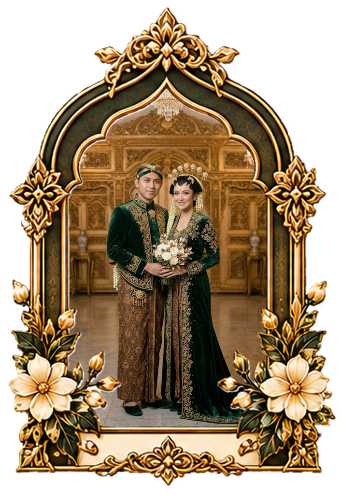
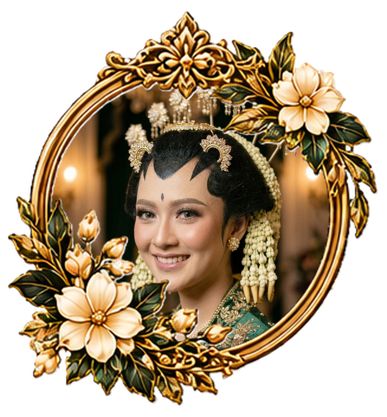
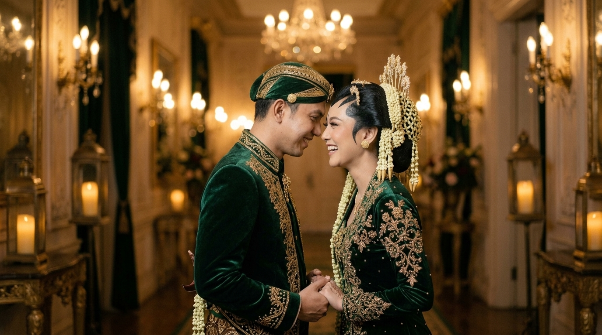
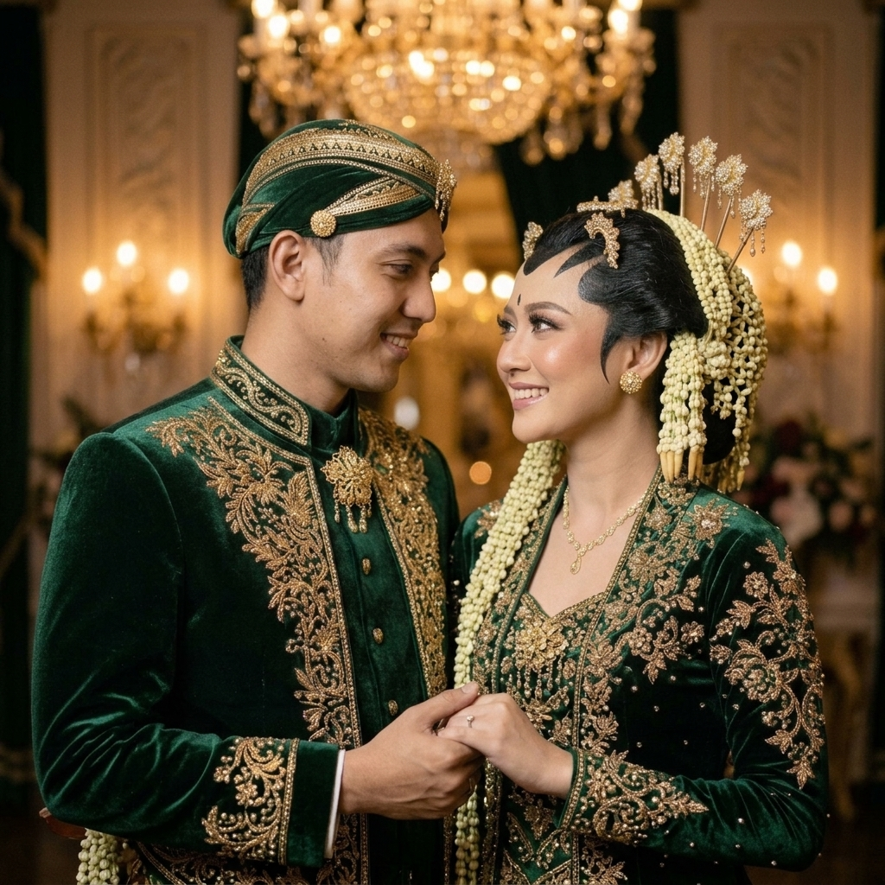
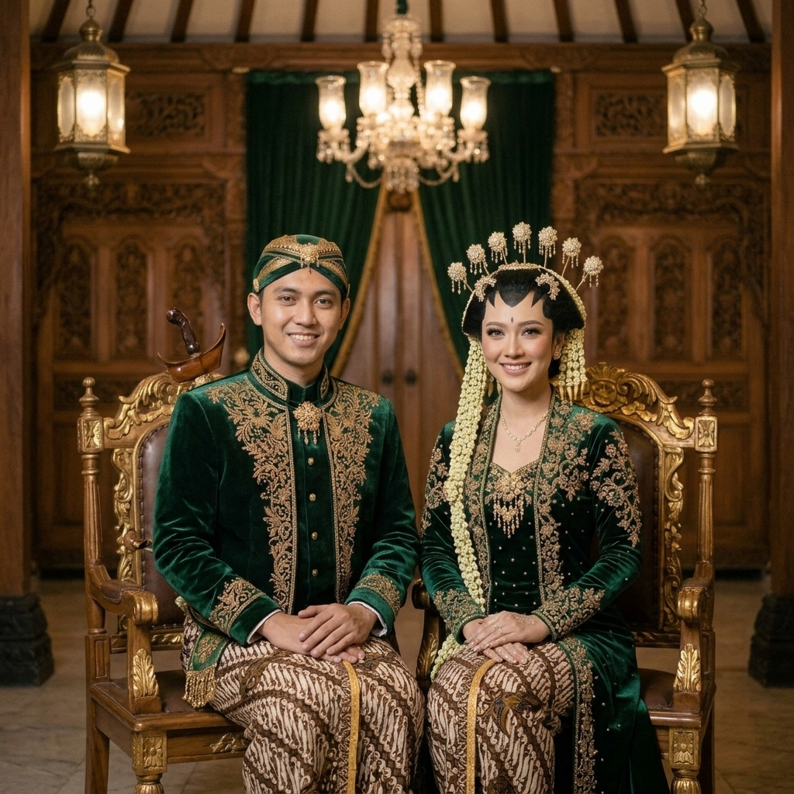

Raka & Sinta
Sabtu, 24 Mei 2025 • Surakarta, Jawa Tengah
“Dua insan melangkah bersama mengukir takdir abadi dalam naungan cinta dan ridho Ilahi.”
بِسْمِ اللَّهِ الرَّحْمَٰنِ الرَّحِيمِ
“Dan di antara tanda-tanda (kebesaran)-Nya ialah Dia menciptakan pasangan-pasangan untukmu dari jenismu sendiri, agar kamu cenderung dan merasa tenteram kepadanya, dan Dia menjadikan di antaramu rasa kasih dan sayang. Sungguh, pada yang demikian itu benar-benar terdapat tanda-tanda bagi kaum yang berpikir.”
Mempelai Bahagia
Dengan memohon rahmat dan ridho Allah SWT, kami bermaksud menyelenggarakan syukuran pernikahan putra-putri kami:
Raden Mas Raka Pradana, S.T.
Putra pertama dari pasangan
Bpk. Bambang Susilo & Ibu Sri Wahyuni

Raden Ajeng Sinta Larasati, S.E.
Putri kedua dari pasangan
Bpk. Hendro Wibowo & Ibu Tri Mulyani
Kisah Cinta Kami
Awal Kisah di Kota Budaya
Pertemuan tak sengaja di salah satu kegiatan kampus di Surakarta menjadi awal mula perkenalan yang membawa benih kebaikan dan saling mengenal satu sama lain.
Langkah Menuju Keseriusan
Dengan restu dan doa kedua orang tua, Raka secara resmi meminang Sinta dalam acara lamaran adat Jawa yang hangat, mengukuhkan tekad untuk melangkah ke pelaminan.
Dua Hati Bersatu Selamanya
Kini tiba saat yang dinanti, kami siap mengikat janji suci pernikahan, memulai lembaran hidup baru sebagai pasangan suami istri dengan ridho Ilahi.

“Cinta bukan menemukan kesempurnaan, melainkan belajar menyempurnakan bersama.”
Hari Bahagia
Sabtu, 24 Mei 2025 • Pukul 08.00 WIB
Akad Nikah
Sasana Handrawina
Keraton Kasunanan Surakarta Hadiningrat
Jl. Kamandungan, Baluwarti, Pasar Kliwon, Surakarta
Resepsi Pernikahan
Sasana Handrawina
Keraton Kasunanan Surakarta Hadiningrat
Jl. Kamandungan, Baluwarti, Pasar Kliwon, Surakarta
Galeri Bahagia
Potret kenangan penuh cinta dan kebahagiaan kami

Raka & Sinta

Janji Suci

Singgasana
Dalam Harmoni Cinta Abadi
Amplop Digital
Doa restu Anda merupakan karunia terindah bagi kami. Namun jika Anda bermaksud memberikan tanda kasih, dapat melalui:
Nomor Rekening
Nomor Rekening
Alamat Pengiriman Kado
Kediaman MempelaiRaka Pradana & Sinta Larasati
Jl. Slamet Riyadi No. 128, Kel. Sriwedari, Kec. Laweyan
Kota Surakarta, Jawa Tengah 57141
No. HP: 0812-3456-7890
Ucapan & Doa Restu
Berikan doa restu dan konfirmasi kehadiran Anda
Budi Santoso & Keluarga
1 jam yang laluSelamat menempuh hidup baru Raka & Sinta! Semoga menjadi keluarga yang sakinah, mawaddah, warahmah. Aamiin ya Rabbal Alamin.
Anindya Putri
3 jam yang laluBarakallahu lakum wa baraka alaikum wa jama'a bainakuma fii khair. Turut berbahagia untuk kalian berdua!
Merupakan suatu kehormatan dan kebahagiaan bagi kami apabila Bapak/Ibu/Saudara/i berkenan hadir dan memberikan doa restu kepada kedua mempelai.
Matur Nuwun
KAMI YANG BERBAHAGIA,
Raka & Sinta
Beserta Keluarga Besar Kedua Mempelai
© 2025 The Wedding of Raka & Sinta. All Rights Reserved.